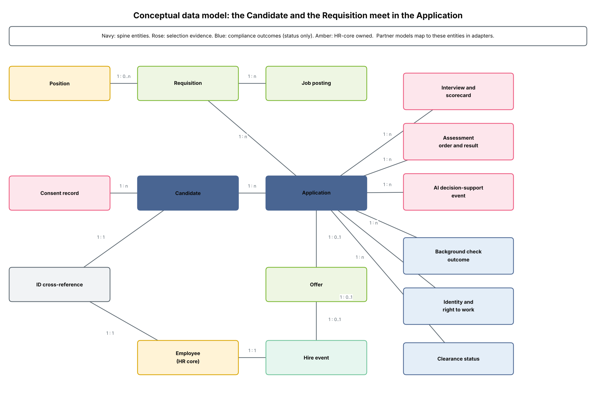

Chapter 11 · Edit this page online ↗
Data Architecture (Phase C)
ADM phase C Information Systems: DataLead streams DataSupporting AI, Security, Integration9P4V V2 ValueStandards TOGAF Phase C, DAMA-DMBOK
On this page
In brief. A canonical hiring model, named owners, summary-only sensitive data and event streams to the data platform.
11.1 Principles applied
Candidate data held in trust; a canonical model that partners map to; summary, not raw sensitive detail; every entity has an owner and a steward (Chapter 6).
11.2 Conceptual model

11.3 Entities
| Entity | Description | Data domain | Data owner (role) | Steward (role) | System of record | Classification | Retention |
|---|---|---|---|---|---|---|---|
| Position and headcount approval | Approved seat and budget that justifies a requisition | Workforce | Head of Workforce Planning | Position data steward | HR core (C42) | Confidential | Life of position + [7] years |
| Requisition | A hiring need with template, team, pay range and status | Requisition | Head of Global TA | TA operations lead | Hiring hub (C05) | Confidential | [7] years after close |
| Job posting | Public advertisement and its channel tracking | Requisition | Head of Global TA | Employer brand lead | Hiring hub (C05, C11) | Public | [3] years after close |
| Candidate | Person in the funnel, internal or external | Candidate | Head of Global TA | Candidate data steward | Hiring hub (C06) | Restricted | Per country, default [12] months after last activity |
| Application | A candidate's application to one requisition | Candidate | Head of Global TA | TA operations lead | Hiring hub (C06) | Restricted | Per country, default [12] months after decision |
| Talent pool membership | Candidate's membership of a pool with consent and source | Candidate | Head of Sourcing | Sourcing lead | Hiring hub CRM (C07) | Restricted | Until consent withdrawn or [24] months inactive |
| Interview and scorecard | Interview event, panel, ratings and comments | Selection | Head of Global TA | TA operations lead | Hiring hub (C08) | Restricted | [12] months after decision |
| Assessment order and result | Partner assessment package, status, score band and report link | Selection | Head of Assessment | Assessment steward | Hiring hub (C06); report at partner (C16) | Restricted | [12] months after decision |
| AI interview record | Invitation, recording link, transcript reference, advisory scores | Selection | Head of Assessment | AI governance lead | Interview partner (C17); summary in hub | Restricted | [6] months unless law requires longer |
| AI decision-support event | Match or screen advice, reasons, model version, human decision | Governance | AI governance lead | AI governance lead | Responsible-AI control plane (C20) | Restricted | [3] years for audit |
| Background check order and outcome | Package, consent reference, status, outcome and date (no raw record detail) | Compliance | Head of TA Operations | Compliance steward | Check provider (C21); outcome in hub | Restricted | Outcome [7] years; provider retains per law |
| Identity and right-to-work record | Verification outcome, document type, date, token | Compliance | Head of HR Operations | Compliance steward | Verification provider (C22) | Restricted | Per country statute |
| Clearance status | Medical fitness flag, security clearance flag and expiry | Compliance | Head of HSE | HSE data steward | HSE or provider system (C23); flag in hub | Restricted | Per HSE policy |
| Offer | Terms, band check, approvals and signature state | Offer | Head of Global TA | Compensation steward | Hiring hub (C09) | Confidential | [7] years |
| Signed offer and contract | Signed document and audit certificate | Offer | Head of HR Operations | Document steward | E-signature and HR core (C24, C25) | Confidential | Employment term + [7] years |
| Hire event and employee stub | Data passed to create the employee record | Hire | Head of HR Operations | HR data steward | Integration hub (C32) to HR core (C42) | Restricted | Event log [13] months; employee per HR policy |
| Consent record | What the person agreed to, when, for which purpose and region | Privacy | Data Protection Officer | Privacy steward | Consent manager (C40) | Restricted | [7] years or per law |
| Candidate survey response | Satisfaction scores and comments | Insight | Head of TA Operations | Experience analyst | Survey platform (C29); aggregates in lake | Confidential | [24] months; comments anonymised |
| Partner registry | Approved partners, categories, regions, credentials reference, contract dates | Platform | Head of Enterprise Architecture | Partner manager | Integration hub (C32) | Internal | Life of contract + [3] years |
| Candidate ID cross-reference | Links hub candidate ID, employee ID and partner references | Platform | Head of Enterprise Architecture | Master data steward | Cross-reference service (C35) | Restricted | As the longest linked record |
| Audit event | Who did what, when, to which record | Platform | CISO | Security operations lead | Security monitoring (C41) | Confidential | [13] months online; [7] years archive |
11.4 Data dictionary
| Entity | Attribute | Type | Mandatory | Rule / domain | Personal data | DQ dimension |
|---|---|---|---|---|---|---|
| Requisition | RequisitionID | Identifier | Yes | Unique; system-generated | No | Uniqueness |
| Requisition | PositionID | Reference | Yes | Must exist in HR core; open headcount available | No | Validity |
| Requisition | JobFamily | Code | Yes | Canonical job-family code list | No | Validity |
| Requisition | Country | Code | Yes | ISO 3166-1 alpha-2 | No | Validity |
| Requisition | PayBandMin / PayBandMax | Amount | Yes | Within approved band for grade and country | No | Accuracy |
| Requisition | HiringManagerID | Reference | Yes | Active employee | Yes | Validity |
| Requisition | Status | Code | Yes | Draft, Approval, Open, On hold, Filled, Cancelled | No | Consistency |
| Candidate | CandidateID | Identifier | Yes | Unique; hub-generated; never reused | No | Uniqueness |
| Candidate | FullName | Text | Yes | As in identity document for hire stage | Yes | Accuracy |
| Candidate | Text | Yes | Valid format; unique per person after de-duplication | Yes | Validity | |
| Candidate | Phone | Text | No | E.164 | Yes | Validity |
| Candidate | Country of residence | Code | Yes | ISO 3166-1 alpha-2; drives consent and retention | Yes | Validity |
| Candidate | Source | Code | Yes | Canonical source list (board, referral, agency, sourcing, direct) | No | Consistency |
| Candidate | InternalFlag | Boolean | Yes | True if matched to an active employee ID | No | Accuracy |
| Application | ApplicationID | Identifier | Yes | Unique; system-generated | No | Uniqueness |
| Application | RequisitionID | Reference | Yes | Must exist and be Open | No | Validity |
| Application | Stage | Code | Yes | Canonical stage list mapped from hub statuses | No | Consistency |
| Application | DecisionReason | Code | Conditional | Mandatory on reject or withdraw; canonical list | No | Completeness |
| Application | DecisionBy | Reference | Conditional | Named user; never a system account for selection decisions | Yes | Accuracy |
| Assessment result | AssessmentOrderID | Identifier | Yes | Unique; passed to partner as correlation key | No | Uniqueness |
| Assessment result | PartnerCode | Code | Yes | From partner registry | No | Validity |
| Assessment result | Package | Code | Yes | Approved package per job family | No | Validity |
| Assessment result | ScoreBand | Code | Conditional | Normalised band (1-5); partner raw score not stored in canonical field | No | Consistency |
| Assessment result | ReportURL | URL | Conditional | Signed link; expires; access logged | Yes | Security |
| AI decision-support event | EventID | Identifier | Yes | Unique; system-generated | No | Uniqueness |
| AI decision-support event | ModelVersion | Text | Yes | Registered in the AI register | No | Traceability |
| AI decision-support event | ReasonSummary | Text | Yes | Plain-language reasons shown to recruiter | No | Completeness |
| AI decision-support event | HumanDecision | Code | Yes | Accepted, Changed, Ignored | No | Completeness |
| Background check outcome | CheckOrderID | Identifier | Yes | Unique; correlation key with provider | No | Uniqueness |
| Background check outcome | Package | Code | Yes | Country and role package from catalogue | No | Validity |
| Background check outcome | ConsentRef | Reference | Yes | Must exist and be in date | Yes | Validity |
| Background check outcome | Outcome | Code | Yes | Clear, Review, Not clear, Cancelled; no raw detail | No | Consistency |
| Background check outcome | OutcomeDate | Date | Yes | Not before order date | No | Timeliness |
| Identity and right-to-work record | VerificationOutcome | Code | Yes | Verified, Refer, Failed | No | Accuracy |
| Identity and right-to-work record | PermitExpiry | Date | Conditional | Mandatory when permit is time-limited | Yes | Completeness |
| Clearance status | FitForRole | Boolean | Conditional | Set by HSE only; no clinical detail stored | Yes | Security |
| Clearance status | ClearanceExpiry | Date | Conditional | Future date | No | Timeliness |
| Offer | OfferID | Identifier | Yes | Unique; system-generated | No | Uniqueness |
| Offer | BaseSalary | Amount | Yes | Within band; currency code present | Yes | Accuracy |
| Offer | StartDate | Date | Yes | After acceptance date; working day | No | Validity |
| Offer | SignatureStatus | Code | Yes | Sent, Viewed, Signed, Declined, Expired | No | Consistency |
| Hire event | HireEventID | Identifier | Yes | Unique; idempotency key | No | Uniqueness |
| Hire event | EmployeeID | Reference | Conditional | Returned from HR core; stored back on candidate | No | Completeness |
| Hire event | MappingStatus | Code | Yes | Mapped, Warning, Failed | No | Accuracy |
| Consent record | ConsentID | Identifier | Yes | Unique; system-generated | No | Uniqueness |
| Consent record | Purpose | Code | Yes | Application, Talent pool, Assessment, Check, Marketing | No | Validity |
| Consent record | Region | Code | Yes | Processing region per partner | No | Validity |
| Consent record | WithdrawnDate | Date | No | If set, processing stops and downstream partners are notified | Yes | Timeliness |
| Partner registry | PartnerCode | Identifier | Yes | Unique | No | Uniqueness |
| Partner registry | Category | Code | Yes | From the 28 partner categories | No | Validity |
| Partner registry | ProcessingRegions | Text | Yes | Approved list | No | Validity |
| Partner registry | ExitPlanDate | Date | Yes | Reviewed annually | No | Timeliness |
| Candidate ID cross-reference | CandidateID | Reference | Yes | Hub ID | No | Uniqueness |
| Candidate ID cross-reference | PartnerRef | Text | Conditional | Partner correlation key | No | Consistency |
| Candidate ID cross-reference | EmployeeID | Reference | Conditional | Filled after hire | No | Completeness |
| Audit event | Actor | Reference | Yes | User or service account | Yes | Traceability |
| Audit event | Action | Code | Yes | Create, Read, Change, Decide, Export, Delete | No | Completeness |
| Audit event | Timestamp | Datetime | Yes | UTC; synchronised clock | No | Timeliness |
11.5 Data quality
| ID | Dimension | Rule | Applies to | Threshold | Action on failure | Owner |
|---|---|---|---|---|---|---|
| DQ-01 | Completeness | All mandatory requisition fields complete before approval | Requisition | 100% | Block approval | TA operations lead |
| DQ-02 | Uniqueness | No duplicate candidate by verified email and phone after matching | Candidate | Under [0.5]% duplicates | Merge task for recruiter | Candidate data steward |
| DQ-03 | Validity | Country, job-family, source and stage use canonical codes | Requisition, Application | 100% | Reject message with mapping hint | Integration lead |
| DQ-04 | Consistency | Hub stage and partner status agree for assessment, interview and check orders | Assessment, Interview, Check | Over [99.5]% | Reconciliation work item | Integration lead |
| DQ-05 | Timeliness | Partner result recorded within [15] minutes of partner completion | Assessment, Interview | 95% | Alert and retry | Integration lead |
| DQ-06 | Accuracy | Hire data matches signed offer for pay, start date and position | Hire event | 100% | Block hire hand-off | HR data steward |
| DQ-07 | Completeness | Decision reason present for every reject or withdraw | Application | 100% | Block status change | TA operations lead |
| DQ-08 | Validity | Offer pay inside band; currency present | Offer | 100% | Block release | Compensation steward |
| DQ-09 | Timeliness | Consent withdrawal reaches all partners within [24] hours | Consent record | 100% | Escalate to privacy office | Privacy steward |
| DQ-10 | Traceability | Every AI event has model version, reasons and human decision | AI decision-support event | 100% | Block use of the AI step | AI governance lead |
| DQ-11 | Security | Check records hold outcome and date only | Background check outcome | 100% | Purge detail; raise incident | Compliance steward |
| DQ-12 | Accuracy | Employee ID returned and stored for every completed hire | Hire event | 100% within [1] day | Work item to HR operations | HR data steward |
| DQ-13 | Completeness | Clearance flag present before start for safety-critical roles | Clearance status | 100% | Block start-date confirmation | HSE data steward |
| DQ-14 | Timeliness | Retention job runs monthly; no record kept beyond rule | Candidate, Application | 100% | Run deletion; report exceptions | Privacy steward |
11.6 Systems of record and flow
| Data | System of record | Flows to |
|---|---|---|
| Position, org, cost centre | HR core | Hiring hub (in) |
| Requisition, candidate, application, offer | Hiring hub | Data platform, HR core on hire |
| Assessment and interview result | Partner (detail); hub (status, band, link) | Data platform (summary) |
| Check and clearance | Provider (detail); hub (outcome and date only) | Data platform (outcome) |
| Employee record | HR core | Payroll, IT provisioning |
11.7 Data management (DMBOK)
Governance, metadata, quality, privacy, security, integration and analytics are covered by the owners and rules above. Retention and residency are in Chapter 22.